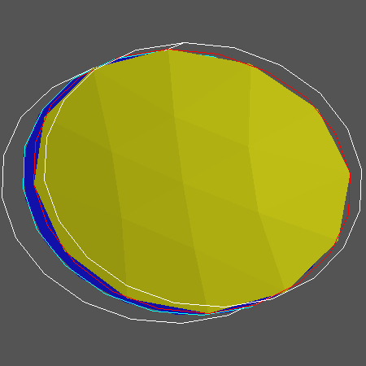
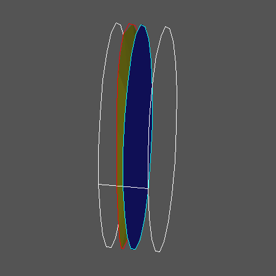
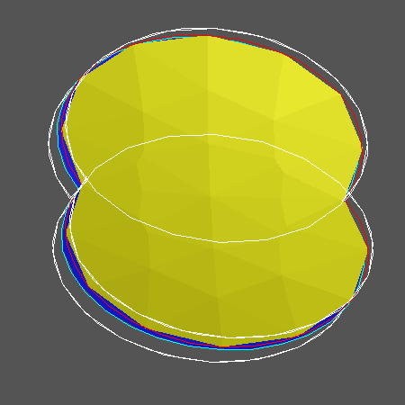
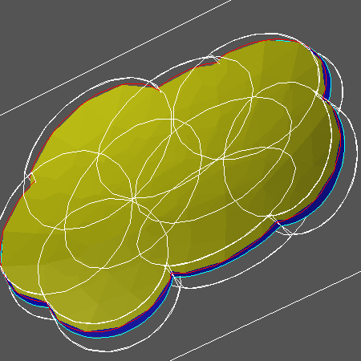
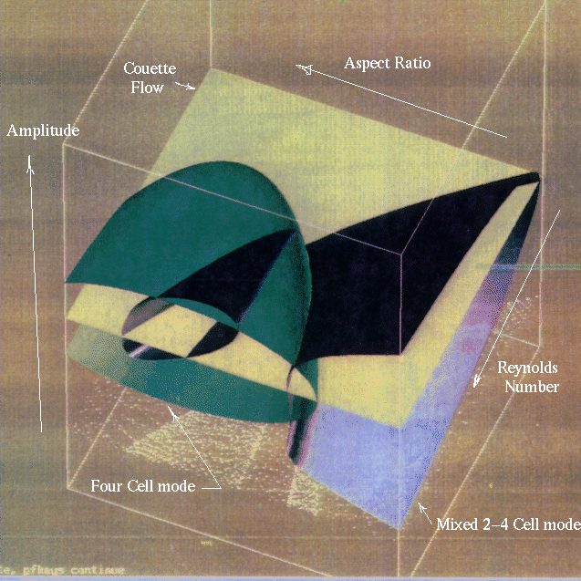

![[HOME]](henderson_files/home.gif) The Geometry Center Home Page
The Geometry Center Home Page
A standard objective in computational mathematics is to graph an implicitly defined surface. Here is a geometric description of a practical but conceptually elegant continuation algorithm written by Mike Henderson of IBM.
Given a point of an implicitly defined surface with full rank Jacobian, the implicit function theorem guarantees that there is some neighborhood in the tangent space that maps into the surface in a bijective manner. In Riemannian geometry, this map is called the exponential map. Starting with a point on the surface, Henderson's algorithm computes the exponential map in a small elliptic region in the tangent space using many applications of Newton's method. Figure 1 shows a (light yellow) region of the surface x^2+y^2-z=0 computed starting from the (dark blue) tangent plane shown in Figure 2.
Figure 1

Figure 2

Starting with the computed region on the surface, the algorithm picks a point on the boundary. It computes the exponential map to the surface mapping into a small neighborhood of this point. Since the point is on the boundary of the computed region, the exponential map always gives new information on the surface. Figure 3 shows two overlapping elliptic regions on the surface from Figure 1.
Figure 3

We want the algorithm to keep repeating the process in the previous paragraph until it has computed the entire surface. (intersected with a compact region) However, in order to get new information each time, the algorithm must identify the overlap between the boundary of the new region and the boundary of the previously computed region. This overlap is interior to the entire computed region, namely the union of the old and new regions. To avoid unnecessary calculation, the algorithm must remove this overlap from consideration before finding a new boundary point. Finding and removing the overlap is the most computationally difficult part of using Henderson's method. After this, the algorithm repeats the process in the previous paragraph. This entire procedure continues to repeat as often as necessary until the algorithm finds no more boundary points, at which time it has finished computing the surface. Figure 4 shows the computed part of the surface in Figure 1 after repeating the entire procedure several times.
Figure 4

There are many applications for such an algorithm. Here is a description of a problem from fluid dynamics called the Taylor-Couette convection problem. Start with two cylinders, one inside the other; put fluid between them. Keep the outside cylinder fixed; spin the inside cylinder. When the rate of spin is sufficiently slow, the fluid just spins slowly around; this is called Couette flow. More precisely, Couette flow is characterized by saying that the fluid velocity along the axis of the cylinders is zero and the fluid velocity in the radial direction is also zero.
Since the outside cylinder does not move, fluid moves more slowly at the outside edge. As the spin rate increases, centrifugal force throws the faster moving fluid at the inside cylinder outwards. This results in a rolling or convection of the fluid in the radial direction. At the bifurcation point at which the fluid ceases to move in Couette flow, two possible kinds of motion can occur together or separately; one possibility is that the fluid moves around two torus-shaped regions around the cylinder; that is, a cross section of fluid moves around two circles in the radial direction. This is what is called a two-convection cell. Another possible fluid motion is a four-convection cell; in other words, the fluid moves radially in four circles in the cross section.
Near the bifurcation point from Couette flow, two- and four-cells coexist with different amplitudes, depending on the height and the spin rate of the inside cylinder. To study the bifurcation point, it is informative to plot the amplitudes of the two- and four-cells as a function of the height of the cylinders and the velocity of the inner cylinder. This information is given implicitly using the Navier-Stokes equations for fluid flow. This is an example of a 2-dimensional surface in 4-dimensional space.
Figure 5 is a picture of a projection of this surface as computed by Henderson's algorithm. He considers the specific situation of infinitely long cylinders such that the flow periodic in the direction along the axis. The aspect ratio is the ratio of the height of the cylinders to the distance between the two cylinders. The Reynolds number is a non-dimensional way of measuring the speed of the inner cylinder. Namely,
R= (angular velocity of inner cylinder)*(radius of inner cylinder)* (distance between cylinders)/viscosity
Figure 5

This article is based on Henderson's talk in the University of Minnesota Dynamics and Mechanics seminar on February 2, 1995. I would like to thank him for providing additional advice, as well as preparing the figures for this article.
The Geometry Center Home Page
Comments to:
webmaster@www.geom.uiuc.edu
Created: February 14 1995 ---
Last modified: Jun 18 1996